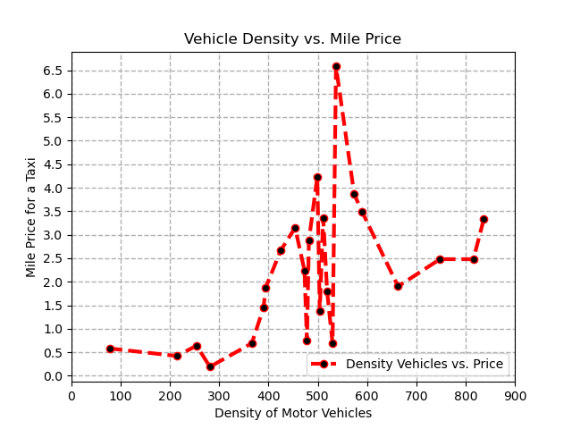

Cabs Data Analysis
A intensive analysis and research on cab fare and tips data from all across the globe with a special focus on New York City Yellow Cabs
Introduction
Through our project we have tried to analyze data of New York City Yellow Cabs from Year 2015 and 2020 on the bases of trip distance, payment types, tip amount etc. along with data from different countries based on their motor vehicle densities, average price per mile etc. We have gathered some really interesting insights and observed unexpected patterns through this project.
11.1%
Decrease in Fares in 5 Year
18.6%
Increase in Tips in 5 Years
100%
Cash Payers gave about $0 in tip
Visualisation 1

Visualisation 2
Visualisation 3

Insights
Visualization 1
The first graph shows us the dependence of price per mile for a cab in different countries based on the density of vehicles per thousand people in their country. We saw a general trend that as the density of vehicles increased, so did the price. The reason for this could probably be that as more people bought private vehicles, the need to use the cab decreased, and using cabs became a luxury, therefore increasing the price. Further, there is a peak when the number of motor vehicles is little over half the number of people. This could probably be because that creates a perfect sweet spot for countries with people rich enough to afford cars but also, the number of cars is less enough to increase demand. So this leads to an increase in demand for a high-paying market increasing the price.
The first graph shows us the dependence of price per mile for a cab in different countries based on the density of vehicles per thousand people in their country. We saw a general trend that as the density of vehicles increased, so did the price. The reason for this could probably be that as more people bought private vehicles, the need to use the cab decreased, and using cabs became a luxury, therefore increasing the price. Further, there is a peak when the number of motor vehicles is little over half the number of people. This could probably be because that creates a perfect sweet spot for countries with people rich enough to afford cars but also, the number of cars is less enough to increase demand. So this leads to an increase in demand for a high-paying market increasing the price.
Visualization 2
The second visualization shows the dependence of tips based on the method of payment and distance for the trip for yellow cabs. This was very interesting to note that people who paid with cash did not tip at all. This was an unexpected observation that was revealed by the data. We feel that this could be because mostly the people who pay with cash are tourists and it is not a tradition to tip the cab drivers as much as it is in the US. Furthermore, only a small fraction of the people used cash and we don’t think that the data is enough to make general conclusions. Secondly, when we observed the tips paid using a card, we observed an almost linear relationship between the amount of tip and the distance. This was something we expected as people tend to pay more to drivers for longer trips to value their time.
The second visualization shows the dependence of tips based on the method of payment and distance for the trip for yellow cabs. This was very interesting to note that people who paid with cash did not tip at all. This was an unexpected observation that was revealed by the data. We feel that this could be because mostly the people who pay with cash are tourists and it is not a tradition to tip the cab drivers as much as it is in the US. Furthermore, only a small fraction of the people used cash and we don’t think that the data is enough to make general conclusions. Secondly, when we observed the tips paid using a card, we observed an almost linear relationship between the amount of tip and the distance. This was something we expected as people tend to pay more to drivers for longer trips to value their time.
Visualization 3
The third visualization compares the trends of average fare and average tip in New York City Yellow Cabs for the same month in 2015 and 2020. So based on our observations from 2015 to 2020, the fares decreased but tips increased. This is actually a positive observation for cab drivers and for the consumers. This benefitted the consumers by decreasing the cab prices and benefitted the drivers as although the fares decreased, their tips increased. However, we feel that overall consumers ended up spending the same amount, but the only difference was now they had a choice. This could be due to multiple reasons. The entry of private cab companies like Uber could have forced yellow cabs to decrease their fare prices. The presence of a pandemic could also have reduced the time people spent commuting decreasing the total fare. All this decreased the fares and increased the tips
The third visualization compares the trends of average fare and average tip in New York City Yellow Cabs for the same month in 2015 and 2020. So based on our observations from 2015 to 2020, the fares decreased but tips increased. This is actually a positive observation for cab drivers and for the consumers. This benefitted the consumers by decreasing the cab prices and benefitted the drivers as although the fares decreased, their tips increased. However, we feel that overall consumers ended up spending the same amount, but the only difference was now they had a choice. This could be due to multiple reasons. The entry of private cab companies like Uber could have forced yellow cabs to decrease their fare prices. The presence of a pandemic could also have reduced the time people spent commuting decreasing the total fare. All this decreased the fares and increased the tips
Additional 1
From this data, it can be seen that from 2015 to 2020, the ratio of passengers that used cards increased. This could be since technological advancements have made it more necessary to carry around a card than cash. Also, as 2020 was during the pandemic, to have less contact with others, people might have opted to use a card instead. Along with the insight that people who pay with card tip more than those that pay with cash, this might suggest that taxi drivers received more tips in 2020.
From this data, it can be seen that from 2015 to 2020, the ratio of passengers that used cards increased. This could be since technological advancements have made it more necessary to carry around a card than cash. Also, as 2020 was during the pandemic, to have less contact with others, people might have opted to use a card instead. Along with the insight that people who pay with card tip more than those that pay with cash, this might suggest that taxi drivers received more tips in 2020.
Additional 2
Contrary to intuition, the passenger count doesn't seem to affect the average amount of tips paid within the group. In 2020, the changes between average tips among the different passenger count groups is extremely consistent. There was more variation in 2015, but still is around the same number: between 1.47 and 1.91. Usually in service industries, more people means higher tips due to inconveniences, however, it does not seem that people tip more in larger groups when riding taxis.
Contrary to intuition, the passenger count doesn't seem to affect the average amount of tips paid within the group. In 2020, the changes between average tips among the different passenger count groups is extremely consistent. There was more variation in 2015, but still is around the same number: between 1.47 and 1.91. Usually in service industries, more people means higher tips due to inconveniences, however, it does not seem that people tip more in larger groups when riding taxis.